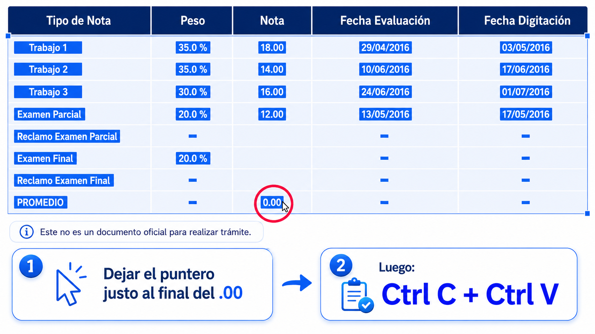

¡Bienvenido a PromCalc! La forma rápida y fácil de calcular promedios.
¡Bienvenido!
Sistema exclusivo para alumnos de la USIL
¿Quieres verificar tu promedio actual o explorar cómo cambiaría con otras calificaciones? Sigue las indicaciones y deja que PromCalc evalúe tus notas con precisión.
| Nombre | Peso | Nota |
|---|
Accede a Infosil y selecciona la asignatura
Ingresa a tu portal y navega a la sección de notas
Selecciona el contenido de la tabla
Usa el mouse para seleccionar toda la información de calificaciones
Copia la tabla y pégala en PromCalc
Usa Ctrl+C para copiar y Ctrl+V para pegar en el área de texto
Haz clic en "Evaluar" para ver resultados
El sistema calculará automáticamente tu promedio actual
